Caso 3: Discriminación y Seguridad Ciudadana en Bolivia
Encuesta de Hogares 2025 (EH2025) — Instituto Nacional de Estadística (INE) Bolivia
Repositorio: github.com/hithub24CH/EH2025_ML_Caso3_Discriminacion
La discriminación y la percepción de inseguridad son fenómenos sociales que afectan la convivencia y el ejercicio de derechos. Bolivia cuenta con la Ley N° 045 contra el racismo y toda forma de discriminación. Este trabajo utiliza los microdatos de la Encuesta de Hogares 2025 (EH2025) del INE Bolivia para:
Variables objetivo (Módulo 9 — Discriminación y seguridad):
| Variable | Construcción | Prevalencia |
|---|---|---|
suf_disc — sufrió discriminación (target principal) | Sí en al menos 1 de los 12 motivos (s09a_01a–l) | 14.77% (n = 1,825) |
victima — fue víctima de algún delito | s09b_02a/b ≠ 8 (ninguno) | 13.25% (n = 1,638) |
inseguridad — se siente inseguro de noche | s09b_01 ≤ 2 | 49.20% (n = 6,080) |
denuncia — denunció formalmente | s09a_02 = 1 | 0.71% (n = 88) |
Los microdatos fueron obtenidos del Archivo Nacional de Datos (ANDA) del INE Bolivia (catálogo
BOL-INE-EH-2025). La EH2025 es un dataset multidimensional con información de vivienda, características
sociodemográficas, educación, salud, empleo, ingresos, gastos y discriminación.
| Archivo | Contenido | Clave | Dimensiones |
|---|---|---|---|
EH2025_Persona.sav | Datos sociodemográficos (edad, sexo, idioma, etnia) | ID_Persona, ID_Vivienda | 39,485 × 276 |
EH2025_Vivienda_1.sav | Servicios básicos, materiales, hacinamiento | ID_Vivienda | 12,726 × 64 |
EH2025_Discriminacion.sav | Módulo 9: discriminación, victimización, seguridad | ID_Persona | 12,358 × 44 |
Nota: el módulo Discriminación es un subconjunto de Persona (las 12,358 personas están en Persona).
El dataset analítico final fusiona los tres módulos y se guarda como dataset_procesado.csv.
Se siguió el ciclo CRISP-DM (Comprensión del negocio y los datos → Preparación → Modelado → Evaluación → Despliegue), cubriendo las 4 partes de la tarea (25% cada una):
| Parte | Contenido | Peso |
|---|---|---|
| Parte 1 | Obtención y preprocesamiento de datos (limpieza, ingeniería de características, fusión) | 25% |
| Parte 2 | Análisis exploratorio y visualización (mapa, barras, relaciones, clustering) | 25% |
| Parte 3 | Modelo de Machine Learning (2 modelos, split 80/20 estratificado, métricas) | 25% |
| Parte 4 | Storytelling en PDF y comunicación de resultados | 25% |
s09a_01a–l) mapeados a etiquetas legibles.sexo, edad (recorte 0–98), anios_educ (años de escolaridad aproximados),
indigena (autoidentificación NPIOC/afroboliviano), lengua_grupo, alfabetizado,
ocupado/desocupado, ingresos en log1p (log_ylab, log_yhogpc),
pobre, pobre_extremo.material_paredes_noble, piso_noble, agua_red,
saneamiento, electricidad, basura_recogida, combustible_limpio,
internet, vivienda_propia, n_cuartos, n_dormitorios,
hacinamiento (personas/cuartos).suf_disc, victima, inseguridad, denuncia.folio (Vivienda, validate="m:1") y por folio+nro (Persona, validate="1:1").dataset_procesado.csv.suf_disc=1 ≈ 14.77% → se usó class_weight="balanced".log_ylab 35% (imputado con mediana), variables de denuncia altamente faltantes (solo quienes sufrieron discriminación).Se generaron las 4 visualizaciones requeridas (mapa interactivo, barras, relación y clustering) más matriz de correlaciones y curvas de comportamiento.
Prevalencia de discriminación por departamento (choropleth sobre bolivia_departamentos.geojson), con
tooltip de discriminación, victimización e inseguridad. Archivo: mapa_discriminacion.html.
La tasa varía entre 8.2% (Tarija) y 23.3% (La Paz).
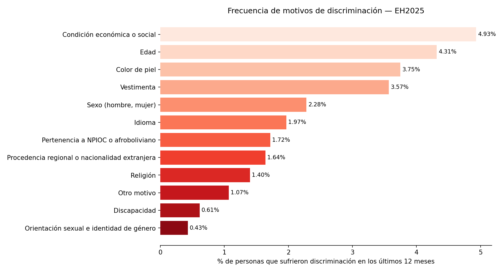
| Motivo | % de personas |
|---|---|
| Condición económica o social | 4.93% |
| Edad | 4.31% |
| Color de piel | 3.75% |
| Vestimenta | 3.57% |
| Sexo (hombre, mujer) | 2.28% |
| Idioma | 1.97% |
| Pertenencia a NPIOC o afroboliviano | 1.72% |
| Procedencia regional o extranjera | 1.64% |
| Religión | 1.40% |
| Otro motivo | 1.07% |
| Discapacidad | 0.61% |
| Orientación sexual e identidad de género | 0.43% |
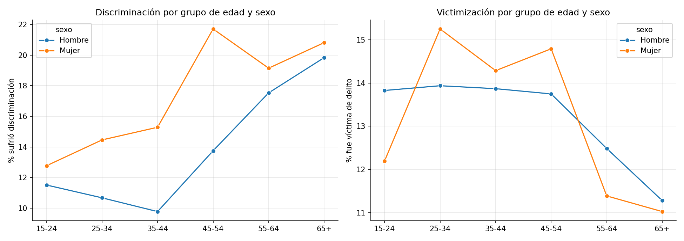
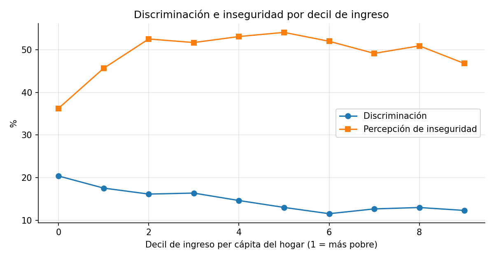
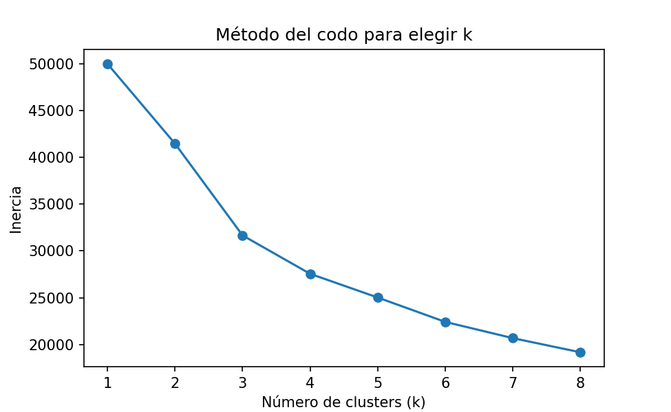
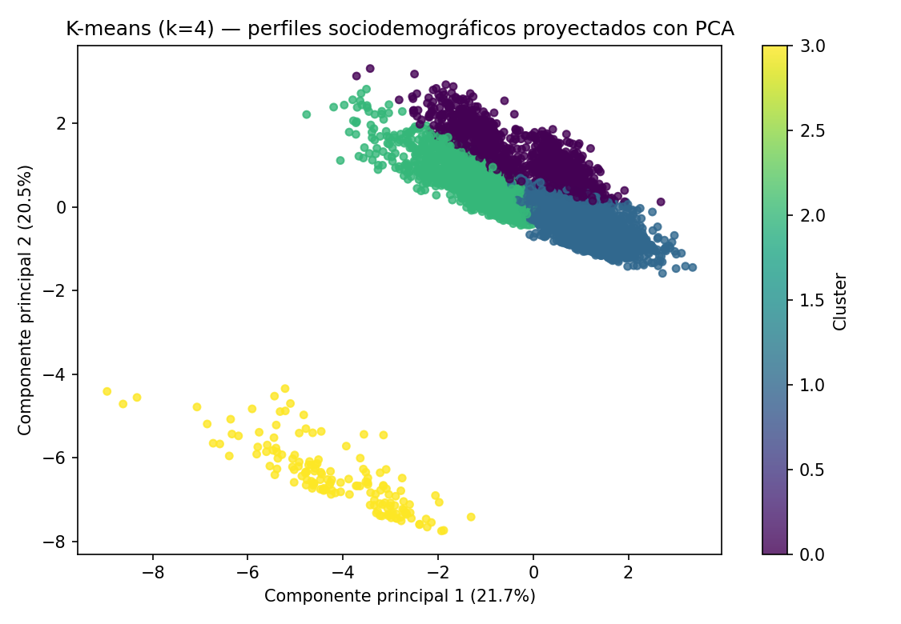
Método del codo sobre muestra de 5,000 personas → k = 4 clusters de perfiles sociodemográficos (ingreso, educación, hacinamiento, pobreza, ocupación, motivos de discriminación, inseguridad), proyectados con PCA.
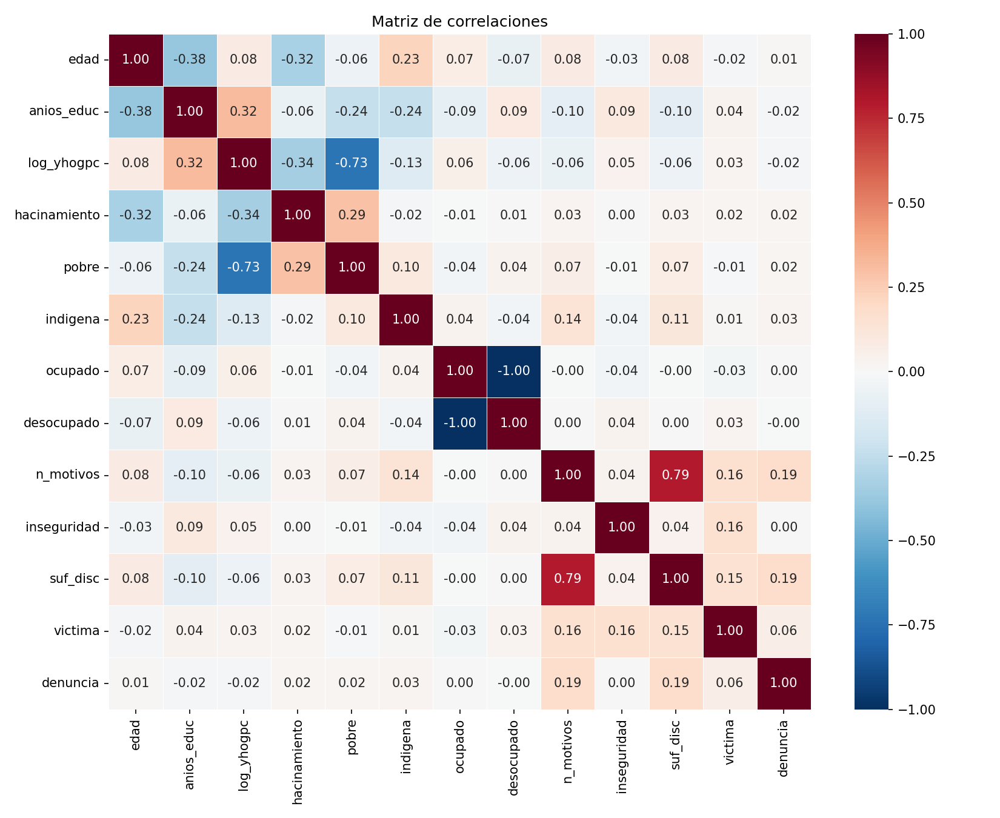
suf_disc (sufrió discriminación en los últimos 12 meses, Sí = 1).float; faltantes → mediana.train_test_split(test_size=0.2, random_state=42, stratify=y) +
StandardScaler ajustado solo con train. Train: 9,886 / Test: 2,472.
| Modelo | Hiperparámetros clave |
|---|---|
| Regresión Logística (interpretable) | max_iter=1500, class_weight="balanced", random_state=42 |
| Random Forest | n_estimators=300, max_depth=12, min_samples_leaf=5, class_weight="balanced", n_jobs=-1 |
| Modelo | Exactitud | Precisión | Sensibilidad | F1 | AUC-ROC |
|---|---|---|---|---|---|
| Regresión Logística | 0.6367 | 0.2238 | 0.5918 | 0.3248 | 0.6522 |
| Random Forest | 0.8022 | 0.3025 | 0.2603 | 0.2798 | 0.6555 |
RF alcanza mayor exactitud (0.80), precisión (0.30) y AUC-ROC (0.66). La regresión logística es más sensible (0.59), útil para no perder casos de discriminación. La clase minoritaria (14.77%) explica la precisión baja.
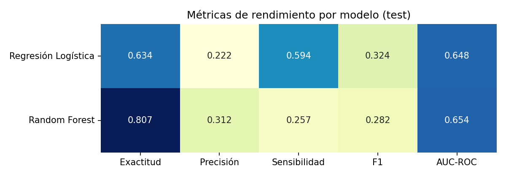
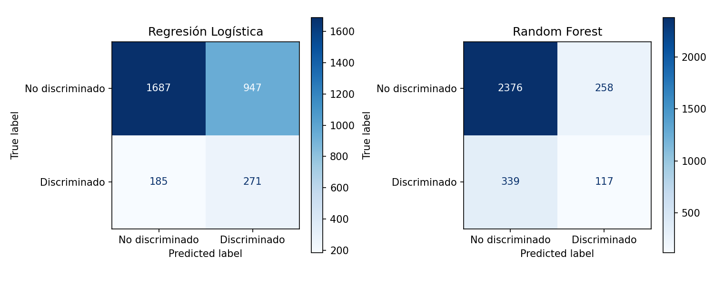
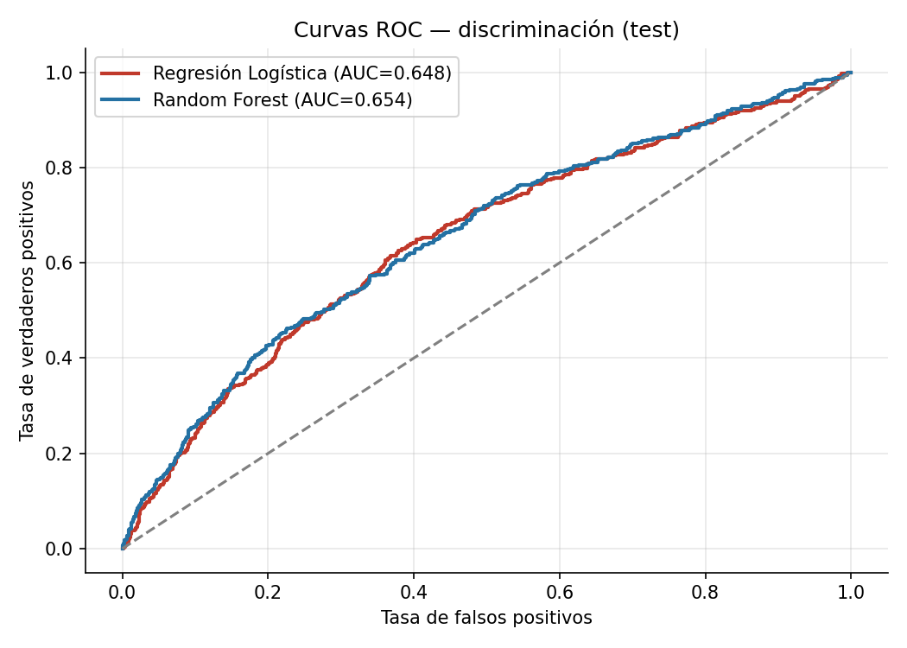
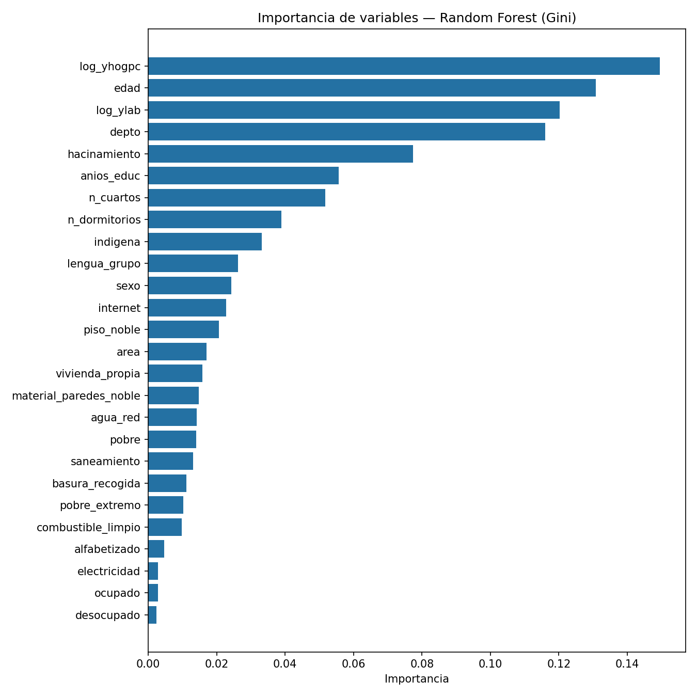
Se complementa con SHAP TreeExplainer sobre el Random Forest (muestra de 1,000 test).
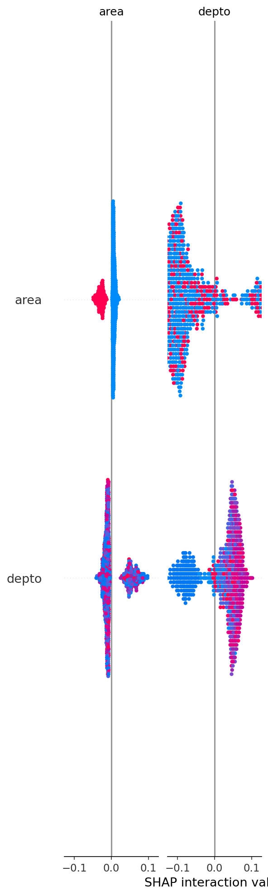
Para toda la muestra se exportan probabilidades de cada modelo (prob_disc_logit, prob_disc_rf)
y sus clasificaciones binarias → predicciones.csv.
storytelling_discriminacion.pdf (máx. 15 diapositivas, orientación apaisada) con ReportLab:
hallazgos, mapa territorial, tabla de métricas, importancia de variables y ≥ 3 recomendaciones.idxmin()/idxmax().Capturas de cada etapa en carpetas Capturas_Parte1..Parte4 (y Capturas/ por fase).
| Entregable | Ruta en el repositorio |
|---|---|
| Notebook Jupyter (Colab) | notebooks/EH2025_Analisis_ML_Caso3.ipynb |
| Dataset procesado | data/procesado/dataset_procesado.csv |
| Predicciones | outputs/predicciones.csv |
| Mapa interactivo | data/procesado/mapa_discriminacion.html |
| Storytelling PDF | outputs/storytelling_discriminacion.pdf |
| Visualizaciones | imagenes/ (12 PNG) |
| Documentación | docs/README.md |
| Evidencias paso a paso | Capturas_Parte1..Parte4/ |
| Dependencias | requirements.txt |
Repositorio público: github.com/hithub24CH/EH2025_ML_Caso3_Discriminacion
— rama main, commit 43f2ce4 (verificado y publicado).
Fuente: Instituto Nacional de Estadística, Encuesta de Hogares 2025 - http://anda.ine.gob.bo/index.php/catalog/256. Fecha de acceso: septiembre 2026.
Pyreadstat Pandas NumPy Matplotlib Seaborn Plotly Folium Scikit-learn SHAP ReportLab Google Colab